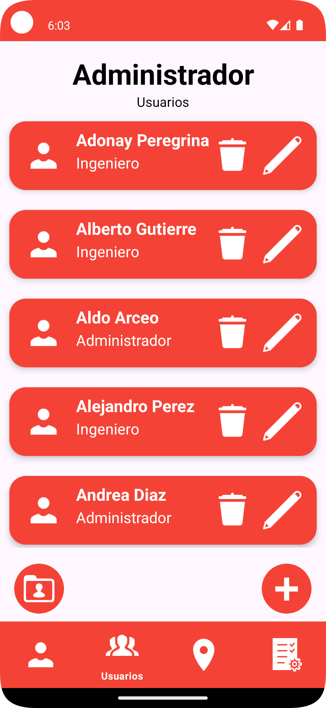

Administrador
Perfíl
Si el usuario que ingresó tiene el rol de administrador, encontrará el apartado de "Perfíl". En esta pantalla podrá ver y modificar sus credenciales. En esta pantalla también encontrará el botón para mostrar su contraseña.
En caso de querer modificar su nombre de usuario o contraseña, hay que cambiar el apartado que se necesite modificar y dar click en el botón "Modificar Usuario". Cabe mencionar que los nombres de usuario son únicos, por ende al querer poner un nombre de usuario ya existente, no se le permitirá.
Al presionar el botón mencionado, aparecerá una ventana de diálogo con el siguiente mensaje: "Atención: ¿Está seguro de modificar sus credenciales?". En caso de no estar seguro puede cancelar el proceso.

El botón de la parte superior izquiera le permite al usuario cerrar sesión, de esta forma podrá regresar a la pantalla de inicio de sesión.
En la parte inferior de la pantalla podrá ver una barra de navegación, esta le permitirá navegar por las distintas pantallas de OrdiHub. Para pasar a otra pantalla hay que presionar el botón asignado.

Usuarios

En el apartado de usuarios encontrará un listado de los usuarios registrados en OrdiHub, además de 2 botones. Para agregar un usuario hay que presionar el siguiente botón.
Aparecerá una ventana solicitando los datos de el usuario a agregar, los datos que hay que llenar son: nombre, nombre de usuario (no se puede repetir con otro usuario), contraseña y tipo. Al dar click en el tipo aparecerán 3 opciones: Ingeniero, Administrador y Supervisor, hay que seleccionar el requerido para el usuario.

Para confirmar la creacion de el usuario hay que dar click en "Aceptar".
En el listado de usuarios encontrará un listado de los usuarios, cada usuario tiene un recuadro y cada recuadro tiene 3 opciones: Editar, eliminar y generar reporte. Para editar hay que presionar el ícono de lápiz en el recuadro de el usuario a modificar.
Al clickear el ícono mencionado, aparecerá una ventana con los datos de el usuario. Aquí podrá modificar el apartado que desee cambiar. Para guardar los cambios hay que dar click en "Aceptar", también puede cancelar el proceso con "Cancelar".

Para eliminar a un usuario, hay que presionar el ícono de bote de basura, aparecerá una ventana de diálogo con el siguiente mensaje: "Atención: ¿Está seguro de eliminar al usuario *Nombre de usuario*?". En caso de no estar seguro puede cancelar el proceso.

En cada recuadro de usuario, en la parte izquierda hay un icono de usuario, este sirve para generar un reporte de usuario. Este reporte contendrá las actividades realizadas por el usuario en un periodo de tiempo.

Aparecerá una ventana con un candelario, aquí hay que seleccionar la fecha de inicio de generación de reporte. Al dar click en "Aceptar" aparecerá otra ventana igual, sólo que para la fecha final de el reporte. Al seleccionar las 2 fechas lo llevará a una pantalla de reporte, donde se puede ver el reporte generado.
En la parte inferior hay otro botón con el ícono de una carpeta, este botón permitirá generar un reporte muy similar al de cada usuario, pero en esta pantalla de reporte contiene las actividades realizadas de todos los usuarios en un periodo de tiempo.